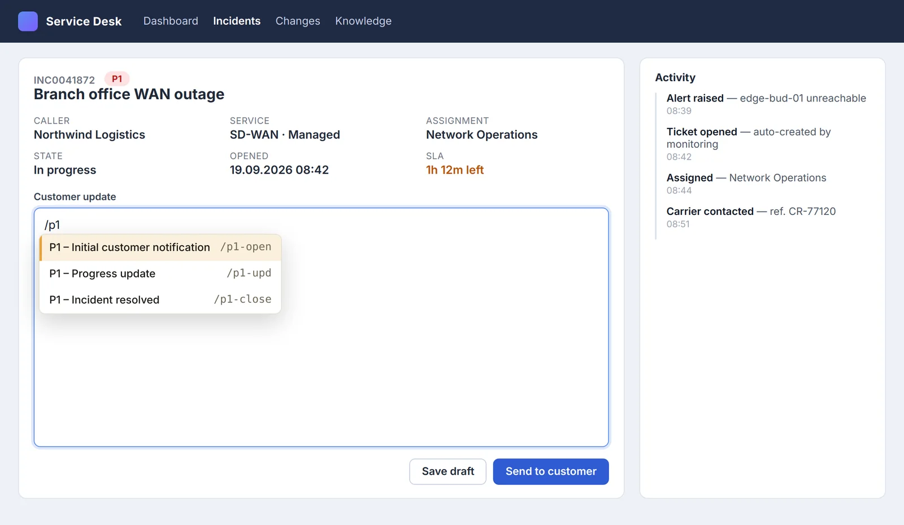
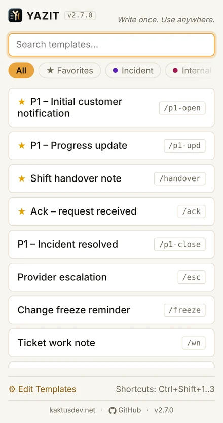
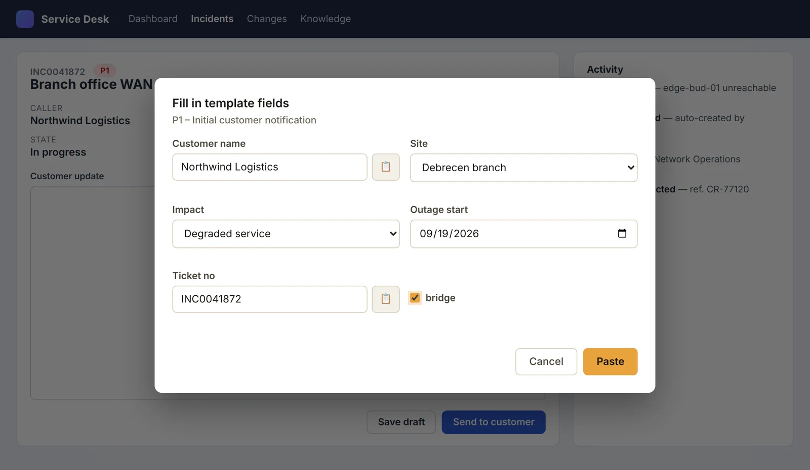
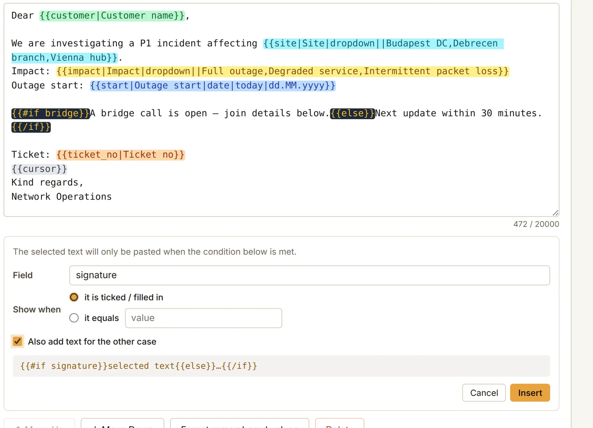
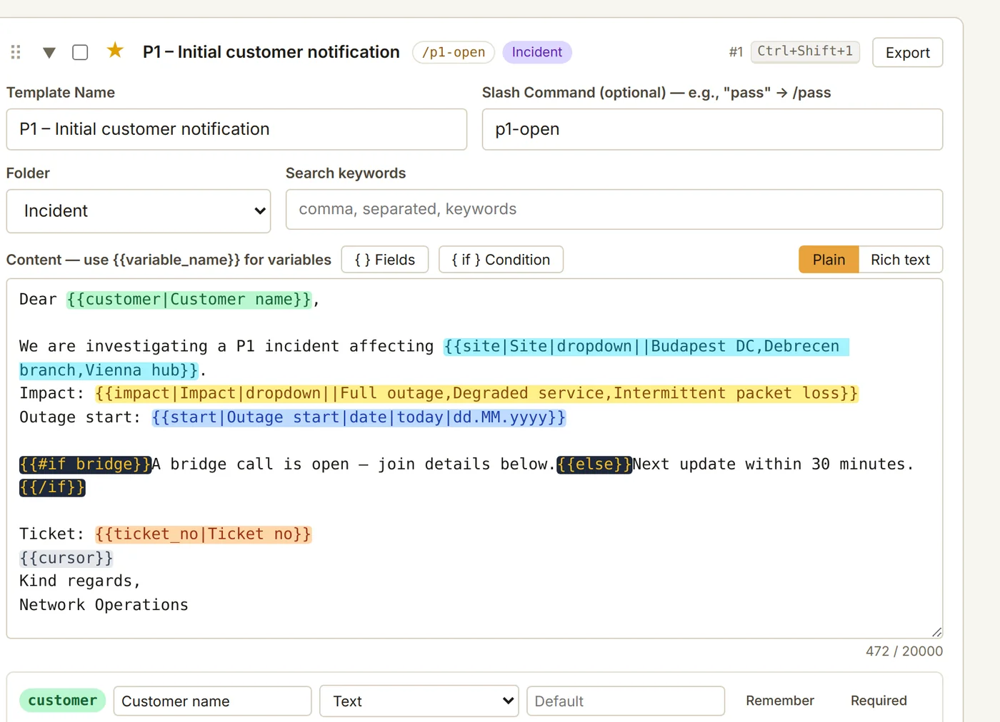
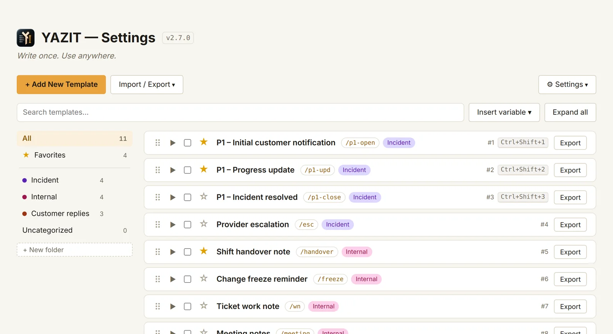
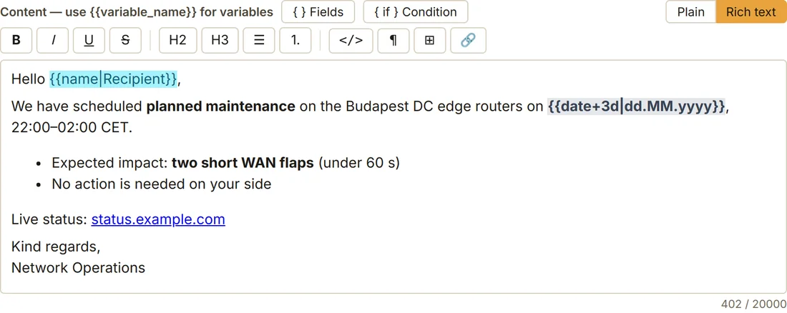
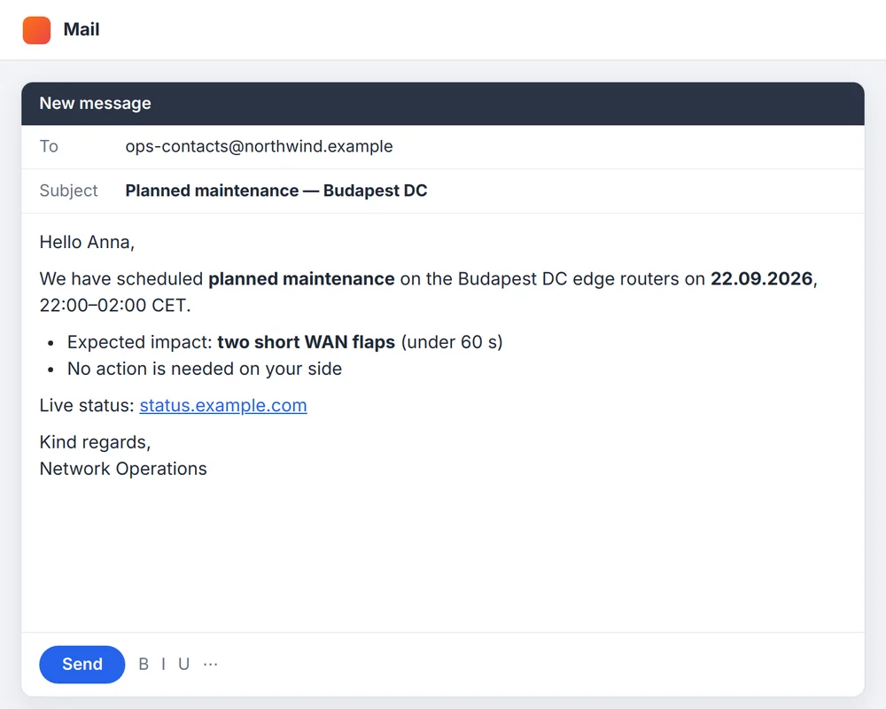
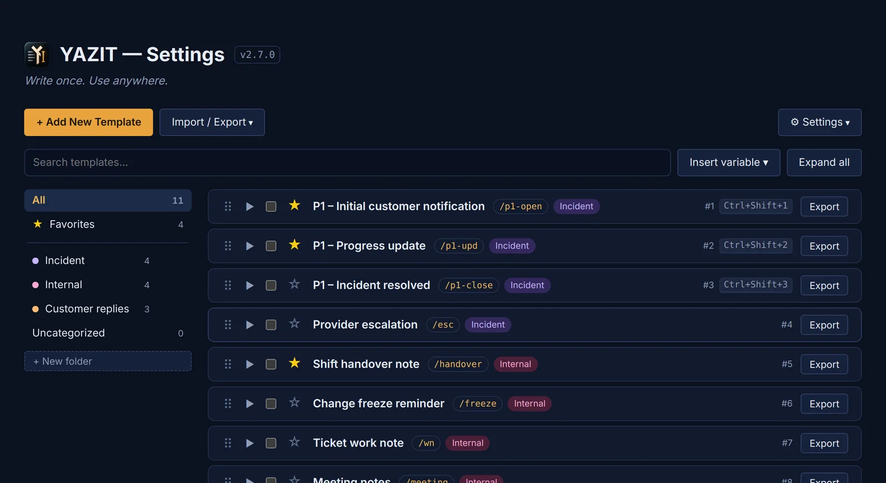
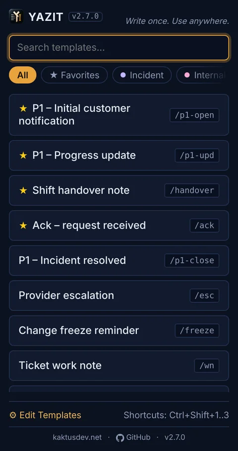

Write once. Use anywhere.
YAZIT pastes your text templates into any web form (ServiceNow, Jira, Zendesk, Gmail) with a shortcut, a /slash command or a click. Nothing ever leaves your browser.

Everything you retype, one keystroke away
Built for people who answer tickets, write incident updates and send the same emails all day.
Four ways to paste. Use whichever your fingers like.
Type / in any field and pick from a fuzzy-matched list, fire your top three with a hotkey, or search the popup.
- Works in textarea, input and rich editors: TinyMCE, CKEditor, Quill, ProseMirror, Gmail
- {{cursor}} leaves the caret exactly where you continue typing
- IME-safe: never gets in the way of Turkish, Japanese, Chinese or Korean input

Fill the blanks. Paste once.
Put {{customer}} or {{ticket_no}} in a template and a tidy form asks for the values as you paste. Then everything lands in one go.
- Text, multiline, dropdown, date and checkbox fields
- Defaults, required fields and an optional “Other…” choice
- Remembers last-used values per field, and forgets them in one click
- Dates like {{date+3d}} or {{date|dd.MM.yyyy}}, resolved on your machine

One template instead of three.
Show a sentence only when a box is ticked or a field has a given value. Select the text, pick the field, click Insert. No syntax to learn.
- Point-and-click condition builder with a live preview
- “Otherwise” text for the other case, in the same step
- A warning appears before a broken condition can reach a customer

Every field in its own colour.
Long templates stay easy to scan: each placeholder gets its own colour, the same one it wears in the Fields panel. Conditions and date variables stand apart at a glance.
- Visual field builder: no pipe syntax to memorise
- Plain or rich text, switch with one click
- Light and dark palettes, all readable

Tidy at five templates. Tidy at a hundred.
Folders with their own colours, starred favorites, instant full-text search and a list that folds to one scannable row per template.
- Drag to reorder, or drop a template onto a folder
- The first three templates get Ctrl+Shift+1…3
- Select several and export them together

Rich text that stays rich.
Bold, lists and links paste formatted into mail and ticket editors, and as clean plain text into simple fields. Same template, right result.
- Headings, lists, tables, code and links
- Everything is sanitized before it is stored and again before it is pasted
- Pasting from Word or Outlook into the editor comes out clean


Light, dark or follow the system.
One setting themes the settings page, the popup and the fill-in form that appears on the page. The choice applies instantly everywhere.
- English and Turkish, detected automatically
- Honours “reduce motion”
- Phone-friendly settings page on Firefox for Android


The small things that add up
Dynamic values
{{date}}, {{date+3d}}, {{time}}, {{datetime}}, {{cursor}}. Computed locally, no permission needed.
Secret-aware
Fields named like passwords, PINs, IBANs or ID numbers are never remembered, in English and Turkish.
Automatic backups
A local snapshot before every destructive action, restorable in one click.
Switch in one click
Import your snippets straight from a Text Blaze or Magical export.
Import / Export
Plain JSON in and out: one template, a selection or everything.
Keyboard-first
Every action has a key. Your real bindings, including ⌘ on macOS, are shown in the popup.
Built defensively
Hidden or passive iframes can never receive your paste. Malformed templates cannot freeze a page.
Tiny and dependency-free
Plain JavaScript, no frameworks, no libraries, no remote code. Roughly 150 KB.
Your templates never leave your browser
YAZIT has no backend because it has nothing to send anywhere. Don't take our word for it; check.
- No network requestsThe only fetch() in the code loads the extension's own language file.
- No analytics, no telemetryNo crash reports, no remote config, nothing that phones home.
- No accountTemplates live in your browser's local storage. There is nothing to sign in to.
- Open source, GPLv3Every line that runs in your browser is public and readable.
# search the source for anything that talks to the network $ git clone https://github.com/yfthcn/YAZIT.git $ cd YAZIT $ grep -nE "fetch\(|XMLHttpRequest|WebSocket|sendBeacon" *.js # one hit: the extension reading its own bundled locale file
Full details in the privacy policy.
From install to first paste in a minute
Save a template
Write it once. Add {{placeholders}} for the parts that change.
Click into any field
A ticket, an email, a chat box: any site, any editor.
Trigger it
Type /shortcut, press a hotkey or pick it from the popup.
Fill in and done
Answer the short form if there is one. The text lands in place.
Stop retyping. Start pasting.
Free forever, no account, nothing to configure before the first paste.
Also works in Edge, Brave, Opera and Vivaldi. YAZIT was formerly called TypeLess; existing users are updated automatically.